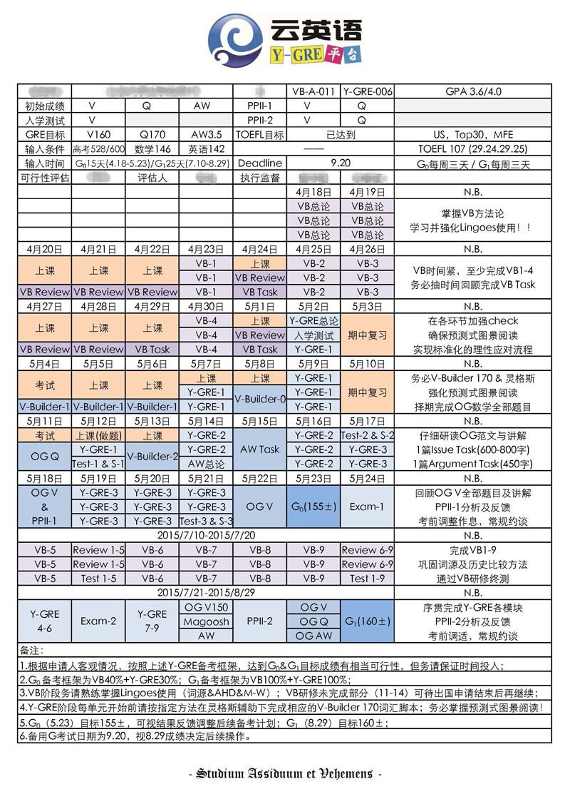
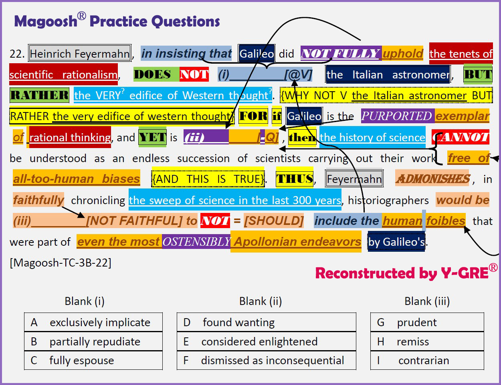
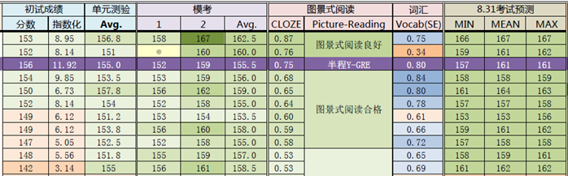

云英语
云英语：因学术而改变

一、背景知识
GRE成绩是申请北美研究生院不可缺少的一环，但其本身在录取决策中的重要性排名相当靠后。换句话说，只要达到了目标学校/专业的预设分数下限（这个下限通常不会公布），录取官更看重申请人的推荐信、科研、GPA…甚至还有个别名校的某些专业不需要提供GRE成绩。
然而对于多数学校专业来说，一个体面的GRE成绩通常意味着申请人具备了基本的学术研究能力。而这个“体面的GRE成绩”（通常为V150+），每年将成千上万有志于去北美继续深造的中国学子拒之门外。
二、总括
"Y-GRE平台"是"云英语"研发的高端学术产品。平台旨在从全新的技术和制度两方面，辅助参与者力争Verbal Reasoning 160+的理想成绩，同时培养高级学术阅读能力。未参加过"VB研修"者从此平台收益的概率将大大降低。截至目前Y-GRE内测总人数已超过2000人，成绩反馈情况：V平均157.9 Q平均168.2 GRE总平均326.1。
Y-GRE借由基于VB的学术阅读词汇体系构建、预测式图景阅读技术、学科背景预处理、模块化自适应学习体系、缺陷干预和分数预测系统等一整套技术，全面根本地提升参与者的学术阅读能力和批判性思维能力，这恰恰是新GRE考试考查的核心内容。
Y-GRE采用反转式学习――视频研修结合人工指导干预，研修者可以根据自己的备考框架和预计考试日期，自主安排开始时间和研修进度，更高效地达成目标成绩。
Y-GRE平台由8小时总论与按学科内容划分的9个单元组成。前3单元100小时，对成绩贡献度60%；中间3单元100小时，贡献度30%；后3单元100小时，贡献度10%。
上图为Y-GRE平台研修者备考框架示例，一般1个月左右，即可达成目标分数。
三、技术
1.学科背景预处理和分学科模块化
ETS虽宣称GRE考试无学科偏向性，但因其文章source均来自于各学科的学术期刊，对学科背景有预先的熟悉会在考试时极大降低由于不熟悉学科背景造成的紧张感和时间浪费。因此，Y-GRE平台将按学科板块（自然科学、生命科学、人文艺术及社会科学）分成12个单元循序渐进全面提升备考者的知识短板。尤其对高频出现的生物板块和理工科学生几乎一无所知的人文类板块，Y-GRE特别进行了强化处理。
2.基于词源的V-Builder 170词汇进阶
透过原始印欧语PIE、词源学和历史比较语言方法，以中学3000词汇科学系统地构建学术阅读词汇体系，将极大地缩短GRE备考时间（1-2月），实现一种不背单词的GRE解决方案；而且长期来看，更能够触及语言历时及共时的本质，从根本上提高对英文和以希腊拉丁为渊源的西方文化的理解力。不只如此，我们基于词源和用法重新修订了超过20k英文单词的汉译，力图以最直观和母语化的方式令学习者领悟每个单词的真正含义。并且，基于词源和用法，我们增益并母语化了韦氏Thesaurus，使学习者得以横向比较和体会同义词之间的微妙差别。
3.预测式图景阅读
取消类比与反义体型以后，新GRE强化了对进行性阅读预测的考察（文字推理）。想在新GRE考试中取得高分，最关键的一点是要“善解题意”――做一个预测式图景阅读者，即在答题的过程中，不仅读懂文本的字面意思，更深挖出文本的潜音深意（undertone），并结合学科背景和ETS的命题模式（pattern），预测题目思路走向（prediction），通过同义旁述（paraphrase）来把握全文的论述结构（argumentation structure），并最终生成完整图景（holistic picture），预设出正确答案。
4.基于GRE命题参数逆向工程的题目研发体系和测试系统
GRE命题高度依赖于Sourcefinder和Sourcerater等自动化软件，ETS公开的论文提供了大量可供借鉴的语料源和语料（学术论述片段）选取参数。加之对于新GRE命题及干扰项设置机制的充分研究，使我们得以有能力进行高质量命题，最大限度地贴合ETS的命题思路。不全面的内部数据显示，尚无有效办法对Y-GRE命题与官方命题进行鉴别。
5.高拟合度的最终GRE成绩预测评估模型
Y-GRE-003开始，我们便利用已有Y-GRE内部数据和最终成绩反馈进行开始尝试建立动态的分数预测模型。根据现有预测公式，多数情况下，预测分数与最终分数的误差不超过2分。实际上，更为有用的是，这个预测评估模型还能够指导备考者了解自己可能的分数天花板，并因此可以选择性价比最高的时间投入方案。
四、教学实现
1.材料与视频
1.V-Builder 170（基于VB的GRE导向的词汇脚本）
V-Builder 170-1
V-Builder 170-2
V-Builder 170-3
2.V-Builder 170 Practice Sets（12 in total）
每册由如下几部分构成：
学科背景文章Background Passage
老G图景填空Cloze (based on past GRE tests)
老G句子填空Sentence Completion (in past GRE tests)
新G文本填空Text Completion (for new GRE)
新G句子等价Sentence Equivalence（for new GRE）
老G阅读理解Reading Comprehension (in past GRE tests)
新G语料源论述结构分析Argumentation Structure Analysis (of new GRE Source Passage)
2.干预
Y-GRE技术组负责分析参与者的各项答题数据，评估其掌握效果和诊断bug，比如词汇理解是否到位，分析题目流程是否符合预测式图景阅读的规范，思维习惯是否存在误区等。基于诊断结果，Y-GRE技术组给出改进建议，并督导参与者贯彻相应要求。
五、报名
Y-GRE-010基准技术费用7800元（校友社区）/8800元（周边社区），推荐VB与Y-GRE联报，总基准费用为12800元（校友社区）/14800元（周边社区）。鼓励团报，具体计算公式如下。12800元对应算法是-400*n，满5人为10800元。14800元对应算法是-800*n，满5人为10800元。以上减免和优惠基于特定条件或产生特定义务。
Y-GRE目前设有高分奖学金政策：在注册研修开始后的2年内参加GRE考试，并提供成绩单电子版，按指定方式公开成绩，则Verbal Reasoning 达到160+/165+/168+， 颁发荣誉奖学金3000元/6000元/8000元（限1次）； Verbal Reasoning达到170，另报销GRE考试费用（不限次）。
一个合格的GRE产品，不应该只靠渲染课堂气氛来传递一种不切实际的愿景，而把具体的任务难题丢给用户；它理应能解决那些耗费考生巨大时间成本的难题，尤其是词汇问题。综合来看，"Y-GRE"既能帮助那些面临deadline的同学较为迅捷地获得理想的GRE分数，也能使资优者达到接近满分的成绩。
·云英语保留对各项实施细节合理调整的权利，有进一步咨询可致电：010-82863898。
版权所有 2011-2015 云英语 Y-English All Rights Reserved
地址：北京市海淀区五道口华清嘉园商务会馆802
电话：400-876-3898 010-82863898 82863899 传真：010-82863897